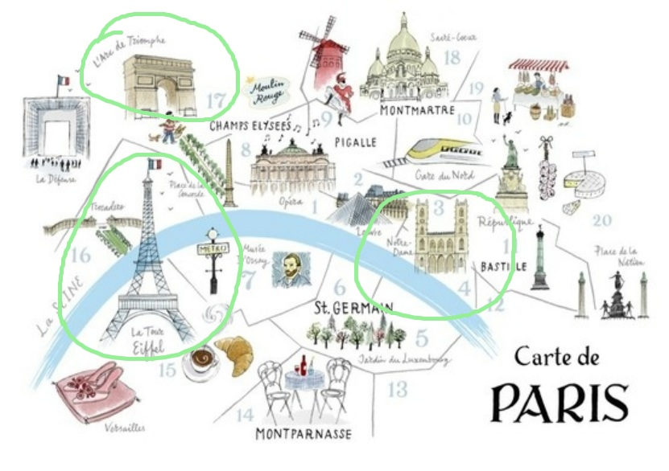

Dear Paris, just wait for me, we are going to meet.

Norte Dame: Cathedrale Notre Dame de Paris, the most visited untricketed site in Paris with upwards of 14 millions people crossing its threshold a year, is not just a masterpiece of French gothic architecture, but was also the focus of catholic Paris for seven centuries.
Effle Tower: No one could imagine Paris today without its signature spire. But Gustave Eiffel only constructured this graceful tower - then the world's tallest, at 320m - as a temporary exhibit for the 1889 Exposition Universelle.
Arc de Triomphe: Commissioned in 1806, the intricately schulpted triumphal arch stands sentinel in the centre of the etoile(star), the world's largest roundabout - be sure to use the underground pedestrain tunnels to reach it!